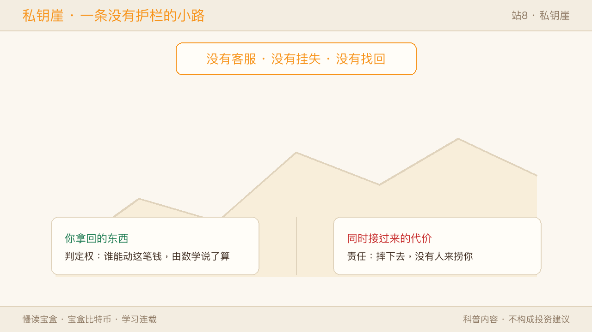
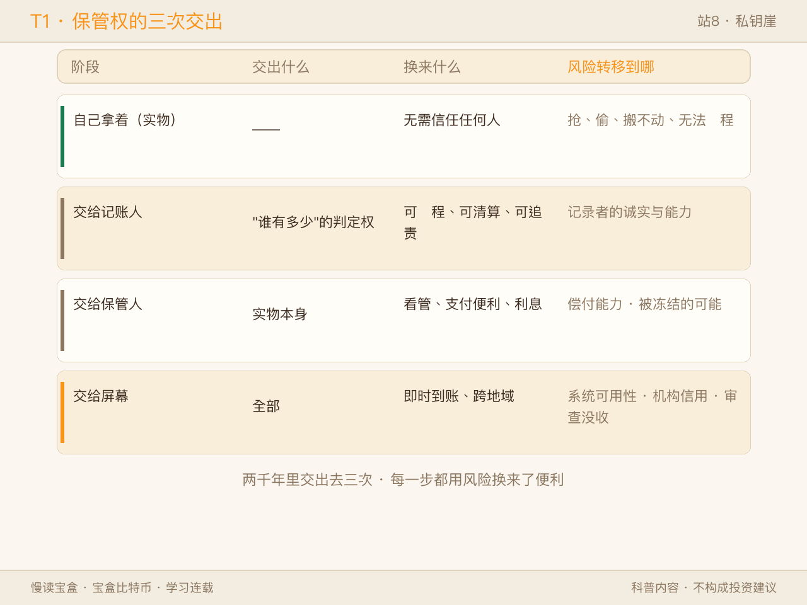
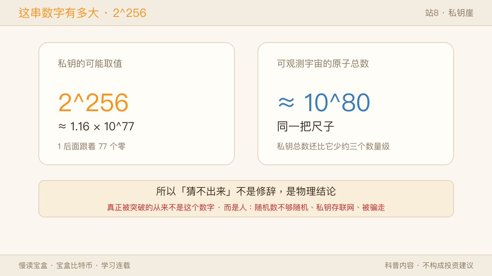
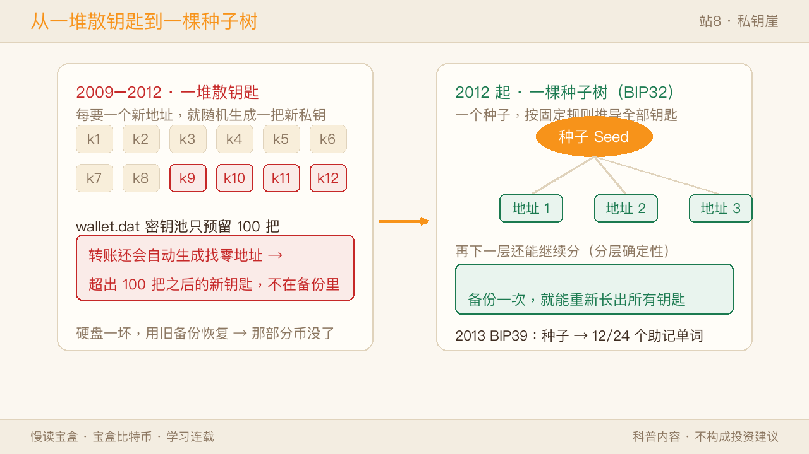
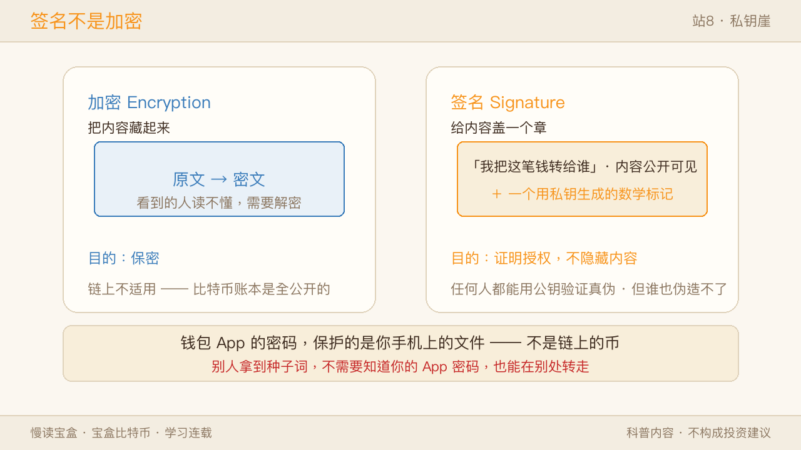
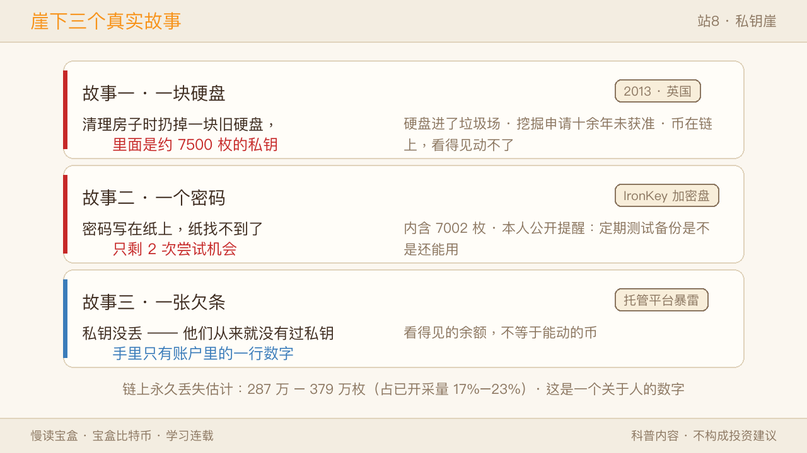
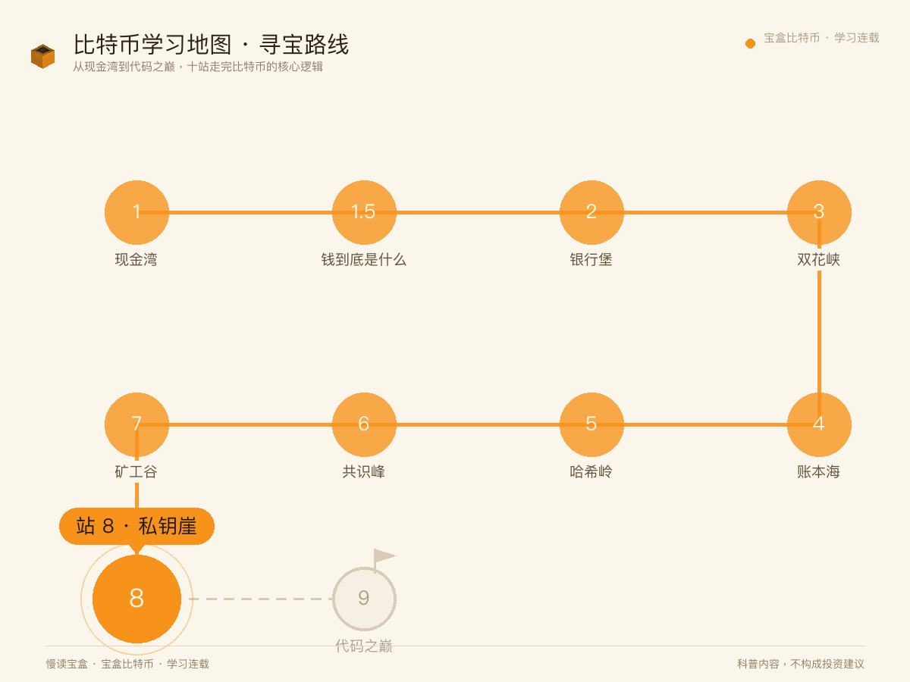
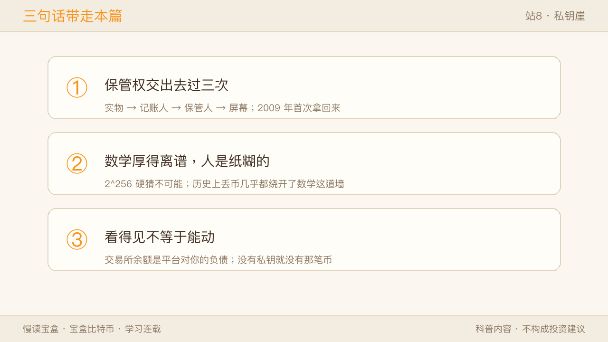

上一站我们从共识峰下到矿工谷，看那群烧着电掷骰子的人。结尾留了一句：矿工有一件事永远做不到——花别人的币。因为那需要一样东西，而那样东西不在矿工手里，不在矿池手里，也不在任何一台服务器上。
它在一个人的手里。
这一站，我们爬上这座地图上的悬崖，把这串字符摊开看清楚。
先说好一件事：站 1 我们把它比作钥匙，那一层已经讲过了。 这一站不重复那个比喻，我们换一个更老的角度——
人类把"我的东西归我保管"这件事，交出去过不止一次。而 2009 年，是历史上头一次有人把它拿回来。

一、悬崖的名字：这是一个两千年的老问题
"凭什么说这串字符是我的？"
这个问题听起来很技术，其实很古老。它真正问的是：我的东西，凭什么是我的？靠谁承认？
在比特币之前，这个问题有一个标准答案：靠一个能被找到的人或机构承认。
你的钱在银行，银行认你的账户；你的房子在房管局，房管局认你的名字；你被人欠了钱，法院认你的借条。所有这些安排有一个共同点——存在某个地方，你可以去申诉，可以请求更正。
比特币把这层抽掉了。链上没有账户，没有用户名，没有"持有人"这个字段。它只认一件事：这笔钱上一次被锁在什么条件里，你现在能不能满足那个条件。
满足条件的方式只有一个：出示一个数学上有效的签名。而能生成这个签名的，只有那串字符。
于是"没有客服"就不是一个待改进的功能缺陷了——它是把中间那层拿掉之后，必然剩下的东西。 你要的是"没人能冻结我的钱"，代价就是"也没人能帮我找回我的钱"。
这一站叫"崖"，不是因为它难懂，是因为这条路上没有护栏，摔下去也没有人来捞。
✅ 像的地方：像你独自带着全部家当走一条山脊小路——没人能抢你，也没人能扶你。 ⚠️ 不一样的地方：山脊小路有巡山队；这里连"巡山队"这个岗位都不存在，因为这套系统里压根没有"管理者"这个角色。
二、保管权的三次交出
要说清"拿回来"有多特别，得先看清它是怎么被交出去的。
头一次交出：交给"记下来的人"。
最古老的财富是自己拿着的——贝壳、金银、牲口。谁拿着算谁的，简单直接。麻烦也很直接：搬不动、怕抢、没法远程。
于是出现了记录。美索不达米亚的泥板上刻着谁欠谁多少大麦，中国古代的账簿记着谁存了多少。钱本身还在你手里晃动，但"谁有多少"这件事，开始由另一块板子说了算。你头一次需要信任记录的人。
第二次交出：交给"保管的人"。
17 世纪的伦敦，金匠替人保管金银，开出一张收据。人们很快发现：买东西时直接递收据更方便，于是收据本身开始流通——这就是纸币的雏形。
这一步的意义极其深远：你把实物交进了别人的屋子，手上剩下的是一张纸。 你换来的是能远程支付、有人看管、还能生出利息；你交出的是——从这一刻起，你的钱变成了别人对你的负债。
站 2 讲的"三大缺陷"，根就埋在这里。
第三次交出：交给"屏幕"。
进入电子时代，钱彻底变成数据库里的一行数字。你看到的余额，是某台服务器上的一个记录。"我有多少钱"这件事，已经完全由别人的系统告诉你。
就这样，人类的保管权在两千年里被交出去了三次，每一步都换到了实实在在的便利。
| 阶段 | 你把什么交出去了 | 换来了什么 | 风险转移到了哪 |
|---|---|---|---|
| 自己拿着（实物） | —— | 无需信任任何人 | 抢、偷、搬不动、无法远程 |
| 交给记账人（泥板/账本） | "谁有多少"的判定权 | 可远程、可清算、可追责 | 记录者的诚实与能力 |
| 交给保管人（金匠/银行） | 实物本身 | 看管、支付便利、利息 | 保管人的偿付能力与被冻结的可能 |
| 交给屏幕（电子账户） | 全部 | 即时到账、跨地域 | 系统可用性、机构信用、审查与没收 |

✅ 像的地方：像把粮食从自家地窖搬进公有粮仓——自家老鼠咬不到了，也不用自己翻晒。 ⚠️ 不一样的地方：粮仓塌了你还能找人理论、找人赔；账本上的钱出了问题，你能做的是申诉，而申诉的结果不由你决定。
注意这张表最后一行的"全部"两个字。到第三次交出时，你已经什么都不握着了——你握着的只是一个承诺。
三、2009：首次拿回来
比特币做的事，就是把最后那一行翻过来。
它换掉的不是"谁来记账"（站 4 讲过，改成全网各记一本），而是更前面的一步——谁能动这笔钱，由数学判定，不由机构判定。
这里有一个特别容易混的点，值得停下来：
私钥不是密码。
密码的逻辑是"我向一个系统证明我是我"。系统掌握着最终解释权：它能重置你的密码、能冻结你、能改规则。你输错密码，是你在请求一个中心放行。
私钥的逻辑完全不同。它不是在向谁证明，它是在完成一道数学条件。 链上那笔钱被锁在一个条件里（大致是"能出示对应这个地址的合法签名"），你的字符能生成这个签名，条件就满足；不能，就永远不满足。
整个过程里没有任何一方在"审核"你，也没有任何一方有权限"通融"你。
✅ 像的地方：像你家的门锁——有钥匙就能开，保安不在也能开，半夜三点也能开。 ⚠️ 不一样的地方：你家门锁配了锁匠这个社会角色，钥匙丢了有补救路径；这里没有补救路径这个选项，不是因为服务差，而是因为设计里根本没留出这个口子。
这就是为什么"没有客服"会反复出现在这个系列里。它不是一个待优化的体验问题，而是你拿回判定权时，同时接过来的那份责任。
社区里那句流传很广的话说的就是这件事——Not your keys, not your coins（不是你的钥匙，就不是你的币）。
四、这串数字到底有多大
好，那这串字符是什么？
它就是一个 256 位的随机数。把它写成十六进制，是 64 个字符；写成二进制，是 256 个 0 和 1。
关键是它的取值范围：2 的 256 次方。
这个数字有多大？我们换个说法感受一下：
- 2^256 ≈ 1.16 × 10^77，也就是 1 后面跟着 77 个零。
- 可观测宇宙里的原子总数，估计在 10^80 上下。
这两个数大致在同一把尺子上——严格说，私钥的总数比宇宙原子数还要少大约三个数量级，但已经是在比"天文数字"更夸张的尺度上了。
这意味着什么？意味着随便猜一个数字，正好撞上别人正在用的那个私钥，概率低到没有任何现实意义。 你哪怕把全地球的芯片都拿来一起猜，从宇宙诞生猜到现在，撞上的概率也可以当作零。
所以"猜不出来"在这句话里不是修辞，是一个物理结论。

但这里有个要紧的转折，比上面这段更重要：
真正被突破的，从来不是这个数字，而是人。
历史上所有私钥失窃，几乎都绕开了这道数学墙——它们走的是别的门：生成随机数的程序不够随机、私钥被存在联网的手机上、被钓鱼页面骗着填了进去、或者干脆是自己抄错了备份。
数学那扇门厚得离谱。人这扇门，是纸糊的。
✅ 像的地方：像一把有 10^77 种齿形的锁——正面硬撬是不可能的。 ⚠️ 不一样的地方：现实中的锁你还得防撬锁匠；这里你真正要防的，是自己把钥匙放在了门口的花盆下面。
五、种子长成一棵树：备份一次就够，是 2012 年才有的事
这一段是本站最有"历史味"的部分，也解释了为什么早期用户的币特别容易丢。
2009–2012：钱包是一串散钥匙。
最早的比特币客户端（就是中本聪写的那个）用的是"随机钱包"——业内有个直白的绰号叫 JBOK（Just a Bunch Of Keys，就一堆钥匙）。
它的工作方式是：你需要一个新地址收款，它就随机生成一把全新的私钥，塞进一个叫 wallet.dat 的文件里。
为了省事，客户端会预先生成 100 把备用钥匙放在"密钥池"里，用一把补一把。
问题出在备份上。假设你今天备份了 wallet.dat：
- 这个备份里有你所有的旧钥匙，加上 100 把还没用过的备用钥匙。
- 然后你开始转账。而比特币每次转账都会自动生成一个"找零地址"（站 4 讲 UTXO 时提过：花掉的面额要重新找零给自己）——所以转账次数比你想的多得多。
- 当新增的钥匙超过 100 把之后，新生成的那些钥匙就不在你的备份里了。
- 硬盘一坏，你用旧备份恢复——前面那些币回来了，后面那些币，永远没了。
✅ 像的地方：像你配了一串钥匙、每开一把新锁就再配一把，钥匙串越来越长。 ⚠️ 不一样的地方：现实里你随时能补配一把新的；钱包里那些"超出备份"的钥匙，是生成之后就再也无法复原的随机数——它们不在任何服务器上，只在那块坏掉的硬盘里。
2012：BIP32，种子长成一棵树。
开发者 Pieter Wuille 在 2012 年提出了分层确定性钱包（HD Wallet）。思路极其漂亮：不再随机生成一堆钥匙，而是从一个种子出发，用固定的数学规则推导出一整棵钥匙树。
这带来一个质变：你只需要备份那一个种子，就能重新长出所有的钥匙——包括将来才会用到的那些。 "备份一次管一辈子"这件事，是从这里才开始的。
2013：BIP39，把种子变成人能抄下来的词。
种子本身是一串二进制，抄写极易出错。于是第二年 BIP39 出台，把种子编码成 12 个或 24 个英文单词：
- 词表固定 2048 个词（正好是 2^11，每个词承载 11 位信息）。
- 12 个词 = 128 位随机熵 + 4 位校验；24 个词 = 256 位 + 8 位。
- 词表里每个词的前 4 个字母都不重复，所以抄错一个字母也还能认出来。
- 最后几位是校验位：随便拼 12 个词，大约每 16 组里只有 1 组能通过校验——你抄错一个词，钱包会直接报错，而不是悄悄给你打开另一个空钱包。

✅ 像的地方：像从"每开一把锁配一把钥匙"变成"一把主钥匙能开出整栋楼所有的门"。 ⚠️ 不一样的地方：主钥匙的丢失后果也被放大了——以前丢一把钥匙只丢一扇门，现在丢一把，整栋楼都进不去。便利上升的同时，风险也集中到了同一点上。
这一段历史能解释一个现象：为什么链上"沉睡"的老地址那么多。 因为 2009–2012 那批人手里根本没有助记词这回事，他们有的只是一个需要反复重新备份的文件。而当时的币几乎不值钱，没人会认真备份。
六、签名不是加密
还有一个混淆值得单独拆掉：钱包"加密"了，所以我的币安全。
这两件事不是一回事。
加密是把内容藏起来，看到的人读不懂，需要解密才能看。
签名不藏任何东西。它的作用是：用私钥对"我要把这笔钱转给谁"这句话做一个数学标记，任何人都可以用对应的公钥去验证——这个标记确实是持有私钥的人做的。
关键在于：验证过程不需要看到私钥，交易内容也依然完全公开。
所以——
- 你在链上的每一笔转账，金额和地址都是明文可见的（站 4 讲过，这是一本公开账本）；
- 签名只证明"我授权了"，不隐藏"我做了什么"；
- 你给钱包 App 设的那个密码，保护的是你手机上的那个文件，不是链上的币。别人拿到你的助记词，不需要知道你的 App 密码，也能在别处把币转走。

✅ 像的地方：像在支票上签字——签字证明"是我授权的"，但金额和收款人写在上面，谁都看得见。 ⚠️ 不一样的地方：支票的签字可以被模仿，所以要靠银行去核对笔迹；这里的签名是数学对象，伪造它在计算上不可行，也正因为不需要任何机构去核，银行这一层才被拿掉了。
七、崖下的三个真实故事
抽象的讲完，看三个真实发生过的。这不是吓唬人，是让你看清"没有客服"这四个字的实际重量。
故事一：一块硬盘。
2013 年，英国的 James Howells 清理房子，把一块旧硬盘当垃圾扔了。那块硬盘里存着约 7500 枚比特币的私钥。
硬盘进了威尔士纽波特的一处垃圾场。他此后十几年里多次向市政府申请挖掘，提出的方案包括自费、包括把收益捐给当地——市政府以环境影响为由，至今没有同意。
那笔币还在链上。任何人打开区块浏览器都能看到那个地址，看得见，动不了。
故事二：一个密码。
程序员 Stefan Thomas 把私钥存在一个加密 U 盘（IronKey）里，密码写在一张纸上——后来纸找不到了。
这个 U 盘只允许输错 10 次，超过就永久锁死。他已经试了 8 次，还剩 2 次。里面有 7002 枚比特币。
他后来公开说过一句话，值得每个做备份的人记住：定期去测试你的备份是不是还能用。 不是备份完就万事大吉——备份只有在"能恢复出来"的时候才叫备份。
故事三：不是丢钥匙，是钥匙本来就不在你手里。
这一类其实更常见。2014 年 Mt. Gox 交易所破产，约 85 万枚比特币失窃，其中约 64.7 万枚至今下落不明。2018 年 QuadrigaCX 的创始人（持有平台钥匙的人）去世，客户资金无法取出。
这些人的私钥没丢——他们从来就没有过私钥。 他们有的是账户里的一行数字，是平台对他们的负债。前两个故事是"钥匙丢了"，这一类故事是"你以为自己有把钥匙，其实手里只有一张欠条"。
看得见的余额，不等于能动的币。这句话在这三个故事里都成立。

链上到底丢了多少？Chainalysis 在 2025 年做过一次估算：约 287 万到 379 万枚比特币已经永久丢失，占已开采量的 17%–23%，其中还包括中本聪自己从未动过的那一百多万枚。
这不是一个"技术故障率"的数字，这是一个关于人的数字。
八、常见误解与边界
| 常见说法 | 实际情况 |
|---|---|
| 私钥丢了可以找人恢复 | 没有任何机构具备这个能力；能依赖的只有"你自己的备份" |
| 存在交易所和存在自己手里是一样的 | 前者你持有的是平台对你的负债；看得见的余额不等于可动的币 |
| 地址就是公钥 | 地址是公钥经过哈希后的编码；在这笔钱被花出去之前，公钥甚至不会公开 |
| 有人能替我把币追回来 | 链上转账没有撤销键；确认之后，没有任何一方有权限回滚 |
✅ 像的地方：像把现金锁进自己家的保险柜——别人拿不走，你自己忘了密码也打不开。 ⚠️ 不一样的地方：保险柜可以请厂家开、可以暴力破拆；链上这笔钱既没有厂家，也没有"暴力"这个选项——它不是被锁在一个箱子里，它是被锁在一道数学题后面。
📌 边界提示（三件常被忽略的事）：
- 继承。如果持有人离世前没把备份交给任何人，这笔币会永久封存——没有任何机构能"重置密码"。这一点站 1 提过，这里再说一次，因为它确实是"拿回判定权"的代价之一。
- 量子。理论上，Shor 算法可以从公钥反推私钥。但粗略估算需要约 1500–2600 个逻辑量子比特，考虑纠错后对应数百万个物理量子比特；而目前公开报道中的机器只有数百个物理比特。这是十年以上尺度的议题，且只有"公钥已经暴露过"的地址才受影响——现在它不构成现实威胁，但值得知道这件事被如何讨论。
- 本文不提供任何保管建议。上面所有内容都是机制与历史，不构成任何操作指导，也不推荐任何产品。备份方案因人而异，请自行判断并自行承担。
九、回到地图（启下代码之巅）
回到这张 10 站学习地图——站 1 现金湾见了比特币是什么；站 2 银行堡看清它要取代什么；站 3 双花峡看它怎么按住双花；站 4 账本海看它用什么承载这笔账；站 5 哈希岭拆开造指纹的机器；站 6 共识峰讲清没有裁判时怎么收敛；站 7 矿工谷把镜头移到掷骰子的人身上；本站私钥崖，我们把两千年的保管权翻了个面——它交出去过三次，2009 年首次拿回来，代价是摔下去没有人来捞。

不过到这里还差最后一问。
你说"没有客服"，是因为这套系统里没有管理者这个角色。那么——一套没有管理者的规则，凭什么能一直跑下去，还不会被谁改掉？
它不是公司，没有 CEO，也没有董事会。那它到底是个什么东西？
下一站，我们登顶。
三句话带走本篇：
